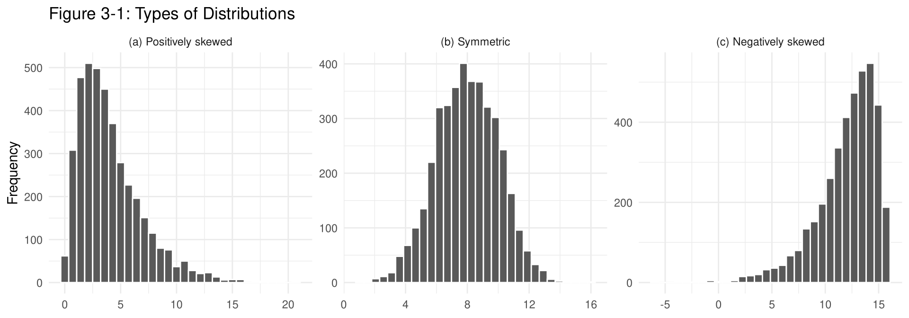
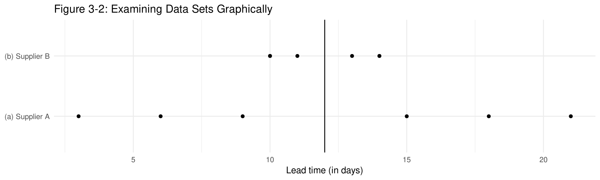
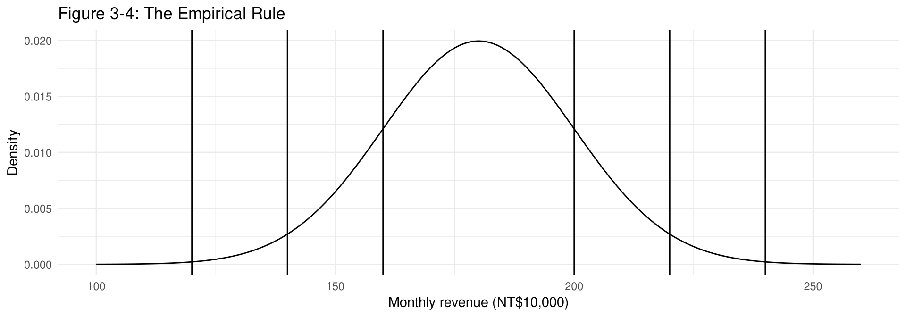
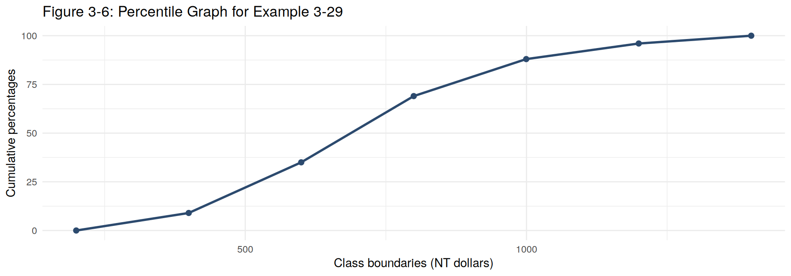
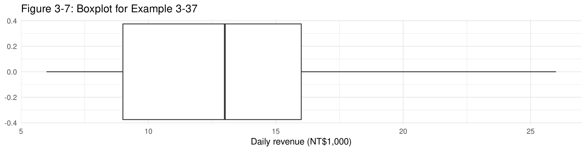
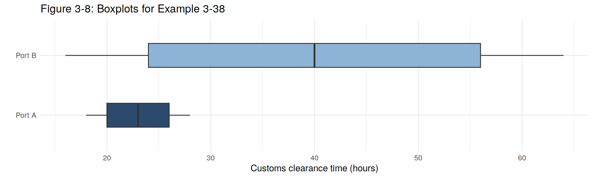

[1] 34.2[1] 3.8Chapter 3: Data Description
Shih Chien University
2026-10-08
Chapter 3 shows the statistical methods used to summarize data — measures of average, measures of variation, and measures of position.
| Section | Topics |
|---|---|
| 3-1 | Mean, median, mode, midrange, weighted mean; distribution shapes |
| 3-2 | Range, variance, standard deviation, coefficient of variation; range rule of thumb; Chebyshev’s theorem; empirical rule; linear transformations |
| 3-3 | Standard scores, percentiles, deciles, quartiles, outliers |
| 3-4 | Five-number summary and boxplots |
After completing this chapter, you should be able to
Loosely stated, the average means the center of the distribution or the most typical case. Measures of average are also called measures of central tendency and include the mean, median, mode, and midrange.
Statistic and Parameter
General Rounding Rule
Rounding should not be done until the final answer is calculated. Rounding in intermediate steps tends to increase the difference between that answer and the exact one.
The mean, also known as the arithmetic average, is found by adding the values of the data and dividing by the total number of values.
The Mean
The mean is the sum of the values, divided by the total number of values.
The sample mean, denoted by \bar{X}, is a statistic: \bar{X} = \frac{X_1 + X_2 + \cdots + X_n}{n} = \frac{\Sigma X}{n}
The population mean, denoted by \mu, is a parameter: \mu = \frac{X_1 + X_2 + \cdots + X_N}{N} = \frac{\Sigma X}{N}
Rounding Rule for the Mean
The mean should be rounded to one more decimal place than occurs in the raw data. If the raw data are whole numbers, round the mean to the nearest tenth; if the data are in tenths, round to the nearest hundredth.
Greek letters denote parameters; Roman letters denote statistics. Assume the data are obtained from samples unless otherwise specified.
Monthly Revenue of a Coffee Chain
The figures show last month’s revenue (in NT$ million) for the nine branches of a coffee chain. Find the mean.
2.8 3.5 4.1 2.6 5.0 3.9 4.4 3.2 4.7(hypothetical data)
Export Value of a Trading Company
The data show the annual export value (in NT$ million) of a small trading company over a 5-year period. Find the mean.
486 512 545 578 614(hypothetical data)
The procedure for finding the mean for grouped data assumes that the mean of all the raw data values in each class is equal to the midpoint of the class.
Procedure — Finding the Mean for Grouped Data
\bar{X} = \frac{\Sigma f \cdot X_m}{n}
Revenue of Night Market Stalls
The frequency distribution shows last month’s revenue (in NT$10,000) for 25 stalls in a night market. Find the mean.
Class boundaries Frequency
9.5-14.5 8
14.5-19.5 7
19.5-24.5 5
24.5-29.5 3
29.5-34.5 2
Total 25(hypothetical data)
Back to Example 3-9
An article reported that the median income for college professors was $82,974: one-half of all professors surveyed earned more than that, and one-half earned less.
Data Array and Median
When the data set is ordered from lowest to highest, it is called a data array.
The median is the midpoint of the data array. The symbol for the median is MD.
Procedure — Finding the Median
Passengers at MRT Stations
The data show the average number of daily passengers (in thousands) entering seven MRT stations. Find the median.
42 57 38 61 49 55 44(hypothetical data)
Solution
Solve
[1] 38 42 44 49 55 57 61[1] 7[1] 49There are an odd number of data values, namely 7, so the middle data value is the median: MD = 49.
The median number of daily passengers is 49 thousand.
Container Throughput
The number of containers (in thousands of TEU) handled by a port over eight quarters is as follows. Find the median.
146 133 171 119 154 126 162 140(hypothetical data)
Solution
Solve
[1] 119 126 133 140 146 154 162 171[1] 8[1] 143The middle two data values are 140 and 146, so
MD = \frac{140 + 146}{2} = \frac{286}{2} = 143
The median throughput is 143 thousand TEU.
The third measure of average is the mode — sometimes said to be the most typical case.
Mode
The value that occurs most often in a data set is called the mode.
Caution
When no value occurs more than once, do not say that the mode is zero. That would be incorrect, because in some data, such as temperature, zero can be an actual value.
Food Delivery Times
The delivery times, in minutes, for seven randomly selected food delivery orders are shown. Find the mode.
32 28 35 28 41 37 26(hypothetical data)
Pickers on Duty
The data show the number of pickers on duty at a distribution center over a 15-day period. Find the mode.
18 18 18 18 18
21 23 23 23 24
23 25 26 25 23(hypothetical data)
Hotel Ratings
The data show the average customer rating of 8 business hotels on a booking platform. Find the mode.
4.3 3.8 4.6 3.5 4.1 3.9 4.8 4.2(hypothetical data)
Modal Class
The mode for grouped data is the modal class — the class with the largest frequency.
Revenue of Night Market Stalls
Find the modal class for the frequency distribution of night market stall revenue shown in Example 3-3.
The mode is the only measure of central tendency that can be used in finding the most typical case when the data are nominal or categorical.
Payment Methods
The data show the payment method chosen by the customers of an online store on a single day. Find the mode.
Method Number
Credit card 214
Mobile payment 168
Cash 95
Store credit 32
Bank transfer 11(hypothetical data)
Solution
Solve
method number
1 Credit card 214
2 Mobile payment 168
3 Cash 95
4 Store credit 32
5 Bank transfer 11Since the credit card category has the largest frequency, 214, the most typical payment method was the credit card.
An extremely high or extremely low data value in a data set can have a striking effect on the mean. These extreme values are called outliers. A method for identifying outliers is given in Section 3-3.
Salaries at a Trading Firm
A small trading firm consists of the owner, the manager, a sales representative, and two clerks, whose monthly salaries in NT dollars are listed here. (Assume that this is the entire population.) Find the mean, median, and mode.
Position Salary
Owner 180,000
Manager 72,000
Sales rep 48,000
Clerk 35,000
Clerk 35,000(hypothetical data)
Solution
Interpretation
The mean is much higher than the median or the mode, because the extremely high salary of the owner tends to raise the value of the mean. In this and similar situations, the median should be used as the measure of central tendency.
Midrange
The midrange is defined as the sum of the lowest and highest values in the data set, divided by 2. The symbol MR is used for the midrange.
MR = \frac{\text{lowest value} + \text{highest value}}{2}
The midrange is a very rough estimate of the average and can be affected by one extremely high or low value.
Flight Cancellations
The number of flight cancellations recorded by an airline in each of five months is shown. Find the midrange.
6 41 97 112 58(hypothetical data)
Containers Loaded
The number of containers (in thousands) loaded at an export terminal in each of five years is shown. Find the midrange.
318 742 906 455 264(hypothetical data)
Sometimes you must find the mean of a data set in which not all values are equally represented.
Weighted Mean
Find the weighted mean of a variable X by multiplying each value by its corresponding weight and dividing the sum of the products by the sum of the weights.
\bar{X} = \frac{w_1 X_1 + w_2 X_2 + \cdots + w_n X_n}{w_1 + w_2 + \cdots + w_n} = \frac{\Sigma wX}{\Sigma w}
where w_1, w_2, \ldots, w_n are the weights and X_1, X_2, \ldots, X_n are the values.
Grade Point Average
An ETP student received an A in International Trade Practice (4 credits), a B in Business Statistics (3 credits), a C in Managerial Accounting (3 credits), and a B in Business English Presentation (2 credits). Assuming A = 4 grade points, B = 3, C = 2, D = 1, and F = 0, find the student’s grade point average.
| Measure | Definition | Symbol(s) |
|---|---|---|
| Mean | Sum of values, divided by total number of values | \mu, \bar{X} |
| Median | Middle point in data set that has been ordered | MD |
| Mode | Most frequent data value | None |
| Midrange | Lowest value plus highest value, divided by 2 | MR |
The Mean
The Median
The Mode
The Midrange
Frequency distributions can assume many shapes. The three most important shapes are positively skewed, symmetric, and negatively skewed (Figure 3-1).
Three Distribution Shapes
Incomes in the United States are positively skewed: most incomes cluster at the low end, and the few high incomes form a tail on the right. If most students score very high on an examination, the distribution of scores is negatively skewed.
Caution
When a distribution is extremely skewed, the value of the mean is pulled toward the tail, so the median rather than the mean is the more appropriate measure of central tendency. An extremely skewed distribution can also affect other statistics.
Prepare data
Output figure

In the skewed panels the mean is pulled toward the long tail, while the median stays near the bulk of the data.
Knowing the average of a data set is not enough to describe it entirely. A shoe store owner who knows that the average size of a man’s shoe is size 10 would not be in business very long if she ordered only size 10 shoes.
In addition to knowing the average, you must know how the data values are dispersed. The measures that determine the spread of the data values are called measures of variation, or measures of dispersion: the range, variance, and standard deviation.
Comparison of Two Suppliers
A buyer wants to compare two overseas suppliers of packaging film on how long each takes to deliver an order. Six shipments were placed with each supplier. Since only six shipments are involved and no further shipments will be placed under the current contracts, these two groups constitute two small populations. The lead times (in days) are shown. Find the mean of each group.
Supplier A Supplier B
9 14
21 10
3 13
15 11
6 14
18 10(hypothetical data)
Back to Example 3-16, Example 3-18, Example 3-19
Solution
Output figure
lead_times <- data.frame(supplier = rep(c("(a) Supplier A", "(b) Supplier B"), each = 6),
days = c(supplier_a, supplier_b))
ggplot(lead_times, aes(days, supplier)) +
geom_point() +
geom_vline(xintercept = 12) +
labs(title = "Figure 3-2: Examining Data Sets Graphically",
x = "Lead time (in days)", y = NULL)
Even though the means are the same, the spread is quite different: supplier B delivers far more consistently.
Range
The range is the highest value minus the lowest value. The symbol R is used for the range.
R = \text{highest value} - \text{lowest value}
Make sure the range is given as a single number.
Comparison of Two Suppliers
Find the ranges for the two suppliers in Example 3-15.
Solution
Solve
For supplier A, R = 21 - 3 = 18 days. For supplier B, R = 14 - 10 = 4 days.
For supplier A, 18 days separate the largest data value from the smallest; for supplier B only 4 days do, which is less than one-fourth of supplier A’s range.
Parcel Volume
The monthly parcel volumes (in ten thousands) handled by a logistics hub for six selected months are shown. Find the range.
37 62 19 48 55 41(hypothetical data)
Solution
Solve
R = 62 - 19 = 43 \text{ (ten thousand parcels)}
One extremely high or one extremely low data value can affect the range markedly, so statisticians use the variance and standard deviation for a more meaningful measure of variability.
Data variation is based on the difference or distance each data value is from the mean; this distance is called a deviation, X - \mu. The sum of the deviations about the mean is always zero, so the deviations are squared.
Population Variance and Standard Deviation
The population variance is the average of the squares of the distance each value is from the mean:
\sigma^2 = \frac{\Sigma(X - \mu)^2}{N}
The population standard deviation is the square root of the variance:
\sigma = \sqrt{\sigma^2} = \sqrt{\frac{\Sigma(X - \mu)^2}{N}}
where X = individual value, \mu = population mean, N = population size.
Procedure — Population Variance and Standard Deviation
Rounding Rule for the Standard Deviation
The final answer should be rounded to one more decimal place than that of the original data.
Comparison of Two Suppliers
Find the variance and standard deviation for the lead times of supplier A in Example 3-15. The lead times in days were
9 21 3 15 6 18Comparison of Two Suppliers
Find the variance and standard deviation for the lead times of supplier B in Example 3-15. The lead times in days were
14 10 13 11 14 10Dividing by n usually underestimates the population variance, so the sum of squares is divided by n - 1, giving a slightly larger value and an unbiased estimate of the population variance.
Sample Variance and Standard Deviation
s^2 = \frac{\Sigma(X - \bar{X})^2}{n - 1} \qquad s = \sqrt{s^2} = \sqrt{\frac{\Sigma(X - \bar{X})^2}{n - 1}}
where X = individual value, \bar{X} = sample mean, n = sample size.
Export Orders
The numbers of export orders received last month by five randomly selected sales offices are shown. Find the variance and standard deviation for the data.
14 50 26 38 32(hypothetical data)
Back to Example 3-21
Shortcut Formulas for s^2 and s
s^2 = \frac{n(\Sigma X^2) - (\Sigma X)^2}{n(n-1)} \qquad s = \sqrt{\frac{n(\Sigma X^2) - (\Sigma X)^2}{n(n-1)}}
These are mathematically equivalent to the previous formulas and do not involve using the mean. Note that \Sigma X^2 is not the same as (\Sigma X)^2: \Sigma X^2 means square the values first, then sum; (\Sigma X)^2 means sum the values first, then square the sum.
Export Orders
The numbers of export orders received last month by five randomly selected sales offices are shown. Find the variance and standard deviation for the data, using the shortcut formula.
14 50 26 38 32(hypothetical data)
Back to Example 3-20
Solution
Solve
[1] 160[1] 5840[1] 180[1] 180s^2 = \frac{5(5840) - 160^2}{5(4)} = \frac{3600}{20} = 180 \qquad s \approx 13.4
The shortcut formula agrees with var(), and with Example 3-20.
Shortcut Formula for Grouped Data
s^2 = \frac{n(\Sigma f \cdot X_m^2) - (\Sigma f \cdot X_m)^2}{n(n-1)} \qquad s = \sqrt{\frac{n(\Sigma f \cdot X_m^2) - (\Sigma f \cdot X_m)^2}{n(n-1)}}
where X_m is the midpoint of each class and f is the frequency of each class.
Be sure to use the sum of the frequencies for n — not the number of classes.
Picking Times at a Distribution Center
Find the sample variance and the sample standard deviation for the frequency distribution shown. The data represent the time, in minutes, needed to pick each of 20 randomly selected orders.
Class Frequency Midpoint
4.5-9.5 2 7
9.5-14.5 3 12
14.5-19.5 5 17
19.5-24.5 4 22
24.5-29.5 3 27
29.5-34.5 2 32
34.5-39.5 1 37(hypothetical data)
| Measure | Definition | Symbol(s) |
|---|---|---|
| Range | Distance between highest value and lowest value | R |
| Variance | Average of the squares of the distance that each value is from the mean | \sigma^2, s^2 |
| Standard deviation | Square root of the variance | \sigma, s |
Four Uses
When two samples have the same units of measure, their standard deviations can be compared directly. To compare the standard deviations of two different variables, use the coefficient of variation.
Coefficient of Variation
The coefficient of variation, denoted by \text{CVar}, is the standard deviation divided by the mean. The result is expressed as a percentage.
\text{CVar} = \frac{s}{\bar{X}} \cdot 100\% \quad \text{(samples)} \qquad \text{CVar} = \frac{\sigma}{\mu} \cdot 100\% \quad \text{(populations)}
Store Sales in Two Cities
For the stores of a coffee chain in Taipei, the mean monthly revenue is NT$2.68 million with a standard deviation of NT$523,000. For its stores in Kaohsiung, the mean monthly revenue is NT$1.94 million with a standard deviation of NT$417,000. Compute the coefficient of variation for the two cities. Which data set is more variable?
(hypothetical data)
Solution
Solve
\text{Taipei: } \text{CVar} = \frac{52.3}{268} \cdot 100\% = 19.5\% \qquad \text{Kaohsiung: } \text{CVar} = \frac{41.7}{194} \cdot 100\% = 21.5\%
The variation of the Kaohsiung stores is only slightly larger than the variation of the Taipei stores. (Both revenue figures are expressed in NT$10,000.)
Hotel Occupancy and Room Rates
For a sample of international hotels in Taipei, the mean occupancy rate is 72.5% with a variance of 27.04, and the mean average daily room rate is NT$4,850 with a variance of 336,400. Compare the variations of the two data sets.
(hypothetical data)
Solution
Solve
\text{CVar}_{\text{occupancy}} = \frac{\sqrt{27.04}}{72.5} \cdot 100\% = 7.2\% \qquad \text{CVar}_{\text{rate}} = \frac{\sqrt{336{,}400}}{4850} \cdot 100\% = 12.0\%
The variation in the room rates is larger than the variation in the occupancy rates.
The Range Rule of Thumb
A rough estimate of the standard deviation is
s \approx \frac{\text{range}}{4}
The rule can also estimate the extreme data values: the smallest data value is approximately \bar{X} - 2s and the largest is approximately \bar{X} + 2s.
Caution
The range rule of thumb is only an approximation and should be used when the distribution of data values is unimodal and roughly symmetric.
[1] 16[1] 3.741657[1] 3[1] 8.516685[1] 23.48331The actual standard deviation is 3.7 and the range is 22 - 10 = 12, so the range rule of thumb gives s \approx 3. The mean is 16, so the estimated smallest and largest values are 8.5 and 23.5 — in the ballpark of the actual 10 and 22.
Chebyshev’s Theorem
The proportion of values from a data set that will fall within k standard deviations of the mean will be at least 1 - \dfrac{1}{k^2}, where k is a number greater than 1 (k is not necessarily an integer).
This theorem can be applied to any distribution, regardless of its shape.
Rents near Campus
The mean monthly rent for a studio apartment near campus is NT$12,000, and the standard deviation is NT$1,500. Find the rent range for which at least 75% of the studios will be listed.
(hypothetical data)
Fuel Cost per Delivery
A survey of delivery riders found that the mean fuel cost per order was NT$8.00, with a standard deviation of NT$1.20. Using Chebyshev’s theorem, find the minimum percentage of the orders whose fuel cost falls between NT$5.00 and NT$11.00.
(hypothetical data)
The Empirical Rule
When a distribution is bell-shaped (normal):
Because the empirical rule requires the distribution to be approximately bell-shaped, its results are more accurate than those of Chebyshev’s theorem, which applies to all distributions.
Prepare data
Suppose the monthly revenue of the stores in a convenience store chain is bell-shaped with a mean of NT$1.8 million and a standard deviation of NT$200,000 (figures below are in NT$10,000).
Output figure

Approximately 68% of the stores take between 160 and 200, approximately 95% between 140 and 220, and approximately 99.7% between 120 and 240 (NT$10,000 per month).
Sometimes it is necessary to transform data values into other data values — for example, converting Celsius temperatures collected in Canada into Fahrenheit for a study used in the United States. This change is called the linear transformation of the data.
Adding a Constant
When a constant is added to each data value, the mean increases by that constant and the standard deviation does not change.
Multiplying by a Constant
When each data value is multiplied by a constant, the mean of the new data set equals the constant times the old mean, and the standard deviation of the new data set equals the absolute value of the constant times the old standard deviation.
Suppose a logistics firm employs five part-time packers whose hourly wages are NT$200, NT$185, NT$215, NT$185, and NT$215. After a profitable quarter every packer is given a raise of NT$20 per hour.
[1] 200[1] 15[1] 220[1] 15The mean rises from NT$200 to NT$220 — exactly the amount added — while the standard deviation stays at 15.
The same five packers worked 18, 14, 22, 14, and 22 hours last week. Suppose the payroll system records the hours in minutes instead, so every value is multiplied by 60.
[1] 18[1] 4[1] 1080[1] 240The mean is multiplied by 60, from 18 hours to 1080 minutes, and the standard deviation is multiplied by 60 as well, from 4 to 240.
In addition to measures of central tendency and measures of variation, there are measures of position or location. These measures include standard scores, percentiles, deciles, and quartiles. They are used to locate the relative position of a data value in the data set.
If a value is located at the 80th percentile, 80% of the values fall below it and 20% fall above it. The median is the value that corresponds to the 50th percentile.
A direct comparison of a score of 90 on a music test and 45 on an English exam is impossible, since the exams might not be equivalent in number of questions or value of each question. A comparison of a relative standard can be made using the mean and standard deviation.
z Score (Standard Score)
A z score or standard score for a value is obtained by subtracting the mean from the value and dividing the result by the standard deviation:
z = \frac{\text{value} - \text{mean}}{\text{standard deviation}}
z = \frac{X - \bar{X}}{s} \quad \text{(samples)} \qquad z = \frac{X - \mu}{\sigma} \quad \text{(populations)}
The z score represents the number of standard deviations that a data value falls above or below the mean. If z > 0 the score is above the mean; if z = 0 it equals the mean; if z < 0 it is below the mean.
Call Handling Times
At a call center’s Taipei site the mean handling time is 4.8 minutes with a standard deviation of 0.6 minute; at its Taichung site the mean is 5.4 minutes with a standard deviation of 0.8 minute. One call in Taipei took 6.3 minutes and one call in Taichung took 6.8 minutes. Compare the relative positions of the two calls.
(hypothetical data)
Solution
Solve
\text{Taipei: } z = \frac{6.3 - 4.8}{0.6} = 2.50 \qquad \text{Taichung: } z = \frac{6.8 - 5.4}{0.8} = 1.75
Since the z score for the Taipei call is higher, that call is relatively longer within its own site than the Taichung call is within its site.
Daily Revenue of Convenience Stores
For a convenience store chain, the 24-hour branches have a mean daily revenue of NT$52,000 with a standard deviation of NT$5,000, while the campus branches have a mean daily revenue of NT$38,000 with a standard deviation of NT$4,000. Find the relative positions of a 24-hour branch that took NT$45,000 and a campus branch that took NT$33,000.
(hypothetical data)
Solution
Solve
\text{24-hour: } z = \frac{45{,}000 - 52{,}000}{5{,}000} = -1.40 \qquad \text{Campus: } z = \frac{33{,}000 - 38{,}000}{4{,}000} = -1.25
In this case, the campus branch stands relatively higher within its own group than the 24-hour branch does within its group.
When all data for a variable are transformed into z scores, the resulting distribution has a mean of 0 and a standard deviation of 1.
Percentiles
Percentiles divide the data set into 100 equal groups. They are symbolized by P_1, P_2, P_3, \ldots, P_{99}.
Caution
Percentiles are not the same as percentages. If a student gets 72 correct answers out of 100, she obtains a percentage score of 72, which says nothing about her position relative to the class. If a raw score of 72 corresponds to the 64th percentile, then she did better than 64% of the students in her class.
| Scaled score | Sec. 1: Listening | Sec. 2: Grammar | Sec. 3: Reading | Total scaled | Percentile rank |
|---|---|---|---|---|---|
| 72 | 99 | 98 | 99 | 720 | 99 |
| 70 | 97 | 95 | 97 | 700 | 96 |
| 68 | 94 | 91 | 93 | 680 | 92 |
| 66 | 89 | 85 | 88 | 660 | 87 |
| 64 | 83 | 78 | 82 | 640 | 80 |
| 62 | 75 | 70 | 74 | 620 | 72 |
| 60 | 66 | 60 | 64 | 600 | 63 |
Percentile ranks published by a business school for the English placement test it gives to incoming students. (hypothetical data)
| Scaled score | Sec. 1: Listening | Sec. 2: Grammar | Sec. 3: Reading | Total scaled | Percentile rank |
|---|---|---|---|---|---|
| 58 | 56 | 50 | 54 | 580 | 53 |
| 56 | 45 | 40 | 43 | 560 | 42 |
| 54 | 35 | 31 | 33 | 540 | 32 |
| 52 | 26 | 23 | 25 | 520 | 24 |
| 50 | 19 | 17 | 18 | 500 | 17 |
| 48 | 13 | 12 | 13 | 480 | 12 |
| 46 | 9 | 8 | 9 | 460 | 8 |
| 44 | 6 | 5 | 6 | 440 | 5 |
| Scaled score | Sec. 1: Listening | Sec. 2: Grammar | Sec. 3: Reading | Total scaled | Percentile rank |
|---|---|---|---|---|---|
| 42 | 4 | 3 | 4 | 420 | 3 |
| 40 | 2 | 2 | 2 | 400 | 2 |
| 38 | 1 | 1 | 1 | 380 | 1 |
| 36 | 1 | 1 | 1 | 360 | 1 |
| 34 | 1 | 1 | 1 | 340 | 1 |
| Mean | 58.4 | 59.1 | 58.7 | 588 | |
| S.D. | 6.2 | 6.8 | 6.5 | 62 |
A student with a scaled score of 64 for section 1 has a percentile rank of 83 — that student did better than 83% of the students who took section 1 of the test.
Order Values on an E-Commerce Platform
The frequency distribution for the order values (in NT dollars) of 200 randomly selected orders placed on an e-commerce platform is shown here. Construct a percentile graph.
Class boundaries Frequency
199.5-399.5 18
399.5-599.5 52
599.5-799.5 68
799.5-999.5 38
999.5-1199.5 16
1199.5-1399.5 8
Total 200(hypothetical data)
Solution
Output figure
percentile_points <- data.frame(boundary = seq(199.5, 1399.5, by = 200),
cum_percent = cumsum(c(0, f)) / 200 * 100)
ggplot(percentile_points, aes(boundary, cum_percent)) +
geom_line() +
geom_point() +
labs(title = "Figure 3-6: Percentile Graph for Example 3-29",
x = "Class boundaries (NT dollars)", y = "Cumulative percentages")
Reading from the graph, an order value of NT$799.50 sits at the 69th percentile, and the 50th percentile falls somewhere between NT$599.50 and NT$799.50.
Percentile Formula
The percentile corresponding to a given value X is computed by using
\text{Percentile} = \frac{(\text{number of values below } X) + 0.5}{\text{total number of values}} \cdot 100
Product Returns
The number of product returns processed each day by a fulfillment center over a 10-day period is shown. Find the percentile rank of 18.
14 23 9 31 18 27 12 21 35 25(hypothetical data)
Back to Example 3-31, Example 3-32, Example 3-33
Solution
Solve
[1] 9 12 14 18 21 23 25 27 31 35[1] 3[1] 35Since there are 3 numbers below the value of 18,
\text{Percentile} = \frac{3 + 0.5}{10} \cdot 100 = 35\text{th percentile}
Hence, the value of 18 is higher than 35% of the data values.
Product Returns
Using the data in Example 3-30, find the percentile rank of 31.
Procedure — Finding a Data Value Corresponding to a Given Percentile
Product Returns
Using the data in Example 3-30, find the value corresponding to the 65th percentile.
Solution
Solve
c = \frac{10 \cdot 65}{100} = 6.5
Since c is not a whole number, round it up to 7. Starting at the lowest value and counting over to the 7th value gives 25. Hence, the value of 25 corresponds to the 65th percentile.
Product Returns
Using the data in Example 3-30, find the data value corresponding to the 30th percentile.
Quartiles and Deciles
Quartiles divide the distribution into four equal groups, denoted by Q_1, Q_2, Q_3. Deciles divide the distribution into 10 groups, denoted by D_1, D_2, \ldots, D_9.
Procedure — Finding Q_1, Q_2, and Q_3
Deliveries per Rider
The numbers of orders delivered in one hour by 9 riders on a food delivery platform are shown. Find Q_1, Q_2, and Q_3.
22 27 19 25 31 24 27 22 26(hypothetical data)
Back to Example 3-35
Solution
Solve
[1] 19 22 22 24 25 26 27 27 31[1] 25[1] 22[1] 2725% 50% 75%
22 25 27 Q_2 = 25 \qquad Q_1 = \frac{22 + 22}{2} = 22 \qquad Q_3 = \frac{27 + 27}{2} = 27
Hence, Q_1 = 22, Q_2 = 25, and Q_3 = 27. The built-in quantile() returns the same three values, so the rest of the chapter simply uses quantile().
Interquartile Range
The interquartile range (IQR) is the difference between the third and first quartiles.
\text{IQR} = Q_3 - Q_1
Quartiles can be used as a rough measure of variability: the IQR is the range of the middle 50% of the data values. Like the standard deviation, the more variable the data set is, the larger the IQR.
Deliveries per Rider
Find the interquartile range for the data in Example 3-34.
| Measure | Definition | Symbol |
|---|---|---|
| Standard score, or z score | Standard deviations a value lies above or below the mean | z |
| Percentile | Position of a value in hundredths of the distribution | P_n |
| Decile | Position of a value in tenths of the distribution | D_n |
| Quartile | Position of a value in fourths of the distribution | Q_n |
Outlier
An outlier is an extremely high or an extremely low data value when compared with the rest of the data values.
Resistant and Nonresistant Statistics
The mean and standard deviation are affected by outliers, so they are called nonresistant statistics. The median and interquartile range are less affected by outliers, so they are called resistant statistics.
Procedure for Identifying Outliers
Caution
There are no hard-and-fast rules on what to do with outliers, nor complete agreement among statisticians on ways to identify them. When a distribution is normal or bell-shaped, data values beyond 3 standard deviations of the mean can be considered suspected outliers.
Complaint Tickets
The numbers of complaint tickets received by a customer service team on 8 randomly selected days are shown. Check the set for outliers.
8 4 18 12 57 8 14 18(hypothetical data)
Solution
Solve
25%
8 75%
18 [1] 1025%
-7 75%
33 Here Q_1 = 8, Q_3 = 18, \text{IQR} = 10 and 1.5(10) = 15, so the fences are -7 and 33. The data value 57 is greater than 33; hence, it can be considered an outlier.
The purpose of traditional analysis is to confirm various conjectures about the nature of the data. The purpose of exploratory data analysis is to examine data to find out what information can be discovered about the data, such as the center and the spread.
Exploratory Data Analysis (EDA)
In exploratory data analysis (EDA), data can be organized using a stem and leaf plot. The measure of central tendency used in EDA is the median; the measure of variation is the interquartile range Q_3 - Q_1; and the data are represented graphically using a boxplot (sometimes called a box and whisker plot).
EDA was developed by John Tukey and presented in his book Exploratory Data Analysis (Addison-Wesley, 1977).
Five-Number Summary
A boxplot involves five specific values, called the five-number summary of the data set:
Boxplot
A boxplot is a graph of a data set obtained by drawing a horizontal line from the minimum data value to Q_1, drawing a horizontal line from Q_3 to the maximum data value, and drawing a box whose vertical sides pass through Q_1 and Q_3 with a vertical line inside the box passing through the median or Q_2.
Procedure — Constructing a Boxplot
Revenue of a Beverage Stand
The daily revenue, in NT$1,000, of a beverage stand on 10 randomly selected days is shown. Construct a boxplot for the data.
14 9 26 6 16 12 8 20 16 9(hypothetical data)
Solution
Output figure

The right whisker is much longer than the left, so the distribution is positively skewed, with a high value of 26 and a low value of 6 thousand NT dollars.
Reading a Boxplot
Customs Clearance Times at Two Ports
The data shown are the customs clearance times, in hours, for a sample of export shipments at two ports. Compare the distributions by using boxplots.
Port A Port B
22 26 20 18 32 56 24 16
24 28 20 26 48 64 56 24(hypothetical data)
Solution
Prepare data
25% 50% 75%
20 23 26 25% 50% 75%
24 40 56 For port A, Q_1 = 20, MD = 23, Q_3 = 26; for port B, Q_1 = 24, MD = 40, Q_3 = 56.
Solution
Output figure

The median clearance time at port B is much higher, and both the interquartile range and the range at port B are much larger than those at port A.
Caution
In exploratory data analysis, hinges are used instead of quartiles to construct boxplots. When the data set consists of an even number of values, hinges are the same as quartiles; hinges for a data set with an odd number of values differ somewhat from quartiles. Since most calculators and computer programs use quartiles, quartiles are used in this textbook.
A modified boxplot can be drawn to check for outliers: the whiskers extend only to the highest and lowest values within 1.5(\text{IQR}) of the box.
| Traditional | Exploratory data analysis |
|---|---|
| Frequency distribution | Stem and leaf plot |
| Histogram | Boxplot |
| Mean | Median |
| Standard deviation | Interquartile range |
Chapter 3 Vocabulary
bimodal · boxplot · Chebyshev’s theorem · coefficient of variation · data array · decile · empirical rule · exploratory data analysis (EDA) · five-number summary · interquartile range (IQR) · mean · median · midrange · modal class · mode · multimodal · negatively skewed or left-skewed distribution · nonresistant statistic · outlier · parameter · percentile · population mean · population standard deviation · population variance · positively skewed or right-skewed distribution · quartile · range · range rule of thumb · resistant statistic · sample mean · standard deviation · statistic · symmetric distribution · unimodal · variance · weighted mean · z score or standard score
Central Tendency
\bar{X} = \frac{\Sigma X}{n} \qquad \mu = \frac{\Sigma X}{N} \qquad \bar{X} = \frac{\Sigma f \cdot X_m}{n}
\bar{X} = \frac{\Sigma wX}{\Sigma w} \qquad MR = \frac{\text{lowest value} + \text{highest value}}{2}
Variation
R = \text{highest value} - \text{lowest value} \qquad \sigma^2 = \frac{\Sigma(X-\mu)^2}{N} \qquad \sigma = \sqrt{\frac{\Sigma(X-\mu)^2}{N}}
s^2 = \frac{n(\Sigma X^2) - (\Sigma X)^2}{n(n-1)} \qquad s^2 = \frac{n(\Sigma f \cdot X_m^2) - (\Sigma f \cdot X_m)^2}{n(n-1)}
\text{CVar} = \frac{s}{\bar{X}} \cdot 100 \qquad s \approx \frac{\text{range}}{4} \qquad 1 - \frac{1}{k^2}
Position
z = \frac{X - \bar{X}}{s} \qquad z = \frac{X - \mu}{\sigma}
\text{Cumulative \%} = \frac{\text{cumulative frequency}}{n} \cdot 100
\text{Percentile} = \frac{(\text{number of values below } X) + 0.5}{\text{total number of values}} \cdot 100
c = \frac{n \cdot p}{100} \qquad \text{IQR} = Q_3 - Q_1
Key point
Copyright notice. These teaching materials follow the organization and terminology of Bluman, A. G. (2023). Elementary statistics: A step by step approach (11th ed.). McGraw Hill. All rights in the original work are reserved by its authors and publishers.
Original examples. Every worked example, data set, and R script in these slides was written for this course. The data are hypothetical unless stated otherwise.
Non-commercial use only. These materials are strictly intended for educational purposes and must not be used for commercial gain or profit.
Proper attribution. Any reproduction, distribution, or use of these materials must provide proper attribution to the original source.

Elementary Statistics: A Step by Step Approach